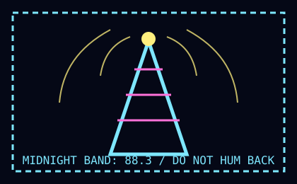

← stoop
88.3 MIDNIGHT BAND
Reception report filed from behind the refrigerator. Antenna: bent fork. Weather: fluorescent.
00:11 A woman reads bus transfers like wedding vows.
00:37 Static shaped like a dog scratches at the chorus.
01:04 Recipe for invisible toast interrupted by elevator numbers.
01:19 A seed packet says “I am not asleep.”
SPONSOR: TUESDAY BUCKET BULLETIN — “WE HOLD WHAT YOU CANNOT NAME”
If you hear your own name, turn the dial to B1½. If you hear cabbage, preheat the theater.